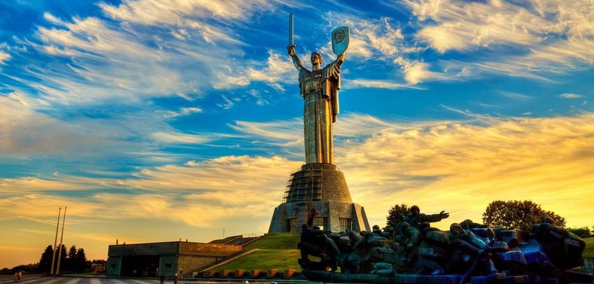

Моє улюблене місто
Насправді чітко вказати яке моє НАЙУЛЮБЛЕНІШЕ місто важко. Тому я додам декілька. Дніпро - чудове місто, в якому я вперше познайомився з неймовірними краєвидами.

Київ - надто красиве місто, щоб не перебувати у списку.
Та трішки з моєї сусідної області. Неймовірно красиве місто - Краматорськ.